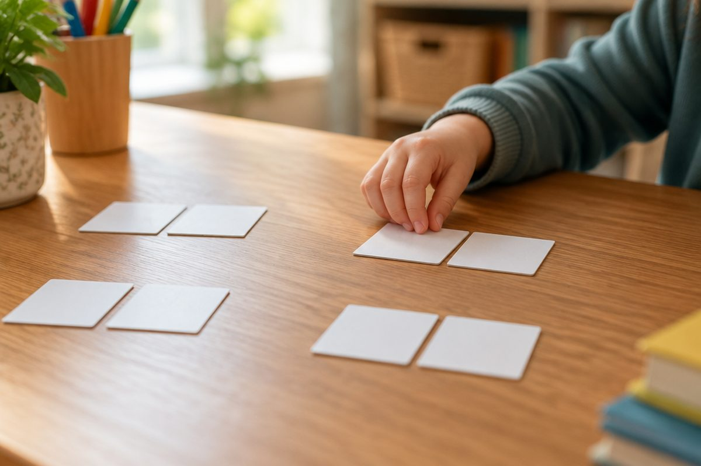

"나는 어제 숙제를 할 것이다"는 왜 어색할까?

"나는 어제 숙제를 할 것이다." 읽자마자 뭔가 이상하지요? '어제'와 '할 것이다'가 서로 맞지 않기 때문이에요. 문장 속 말들이 서로 짝을 이루어 잘 어울리는 것을 '호응'이라고 해요.
문장 성분과 호응이란?
문장을 이루는 각 부분을 문장 성분이라고 해요. 대표적으로 '누가/무엇이'에 해당하는 주어, '어찌하다/어떠하다/무엇이다'에 해당하는 서술어, '무엇을'에 해당하는 목적어, 서술어를 꾸며 주는 부사어 등이 있어요.
호응은 문장에서 앞에 어떤 말이 오면 뒤에 그에 어울리는 말이 짝지어 오는 것이에요.
호응이 맞지 않으면 문장이 어색해지고 뜻이 잘 전달되지 않아요.
동생이(주어) / 사과를(목적어) / 맛있게(부사어) / 먹는다(서술어).
주어와 서술어의 호응
주어와 서술어는 서로 어울려야 해요. 특히 문장이 길어지면 주어를 잊어버리고 서술어를 엉뚱하게 쓰기 쉬워요.
호응을 확인하려면 주어와 서술어만 떼어 내어 이어 읽어 보세요. '내 꿈은 ~ 되고 싶다'처럼 어색하면 고쳐야 해요.
어색한 문장: 내 꿈은 멋진 요리사가 되고 싶다. (꿈은 ~ 되고 싶다 ) 고친 문장: 내 꿈은 멋진 요리사가 되는 것이다. / 나는 멋진 요리사가 되고 싶다.
시간을 나타내는 말과 서술어의 호응
'어제', '지난주', '아까'처럼 지난 때를 나타내는 말에는 '~었다/~았다/~였다'처럼 과거를 나타내는 서술어가 어울려요.
'지금', '요즘'에는 '~ㄴ다/~는다'처럼 현재를, '내일', '다음 주'에는 '~ㄹ 것이다', '~겠다'처럼 미래를 나타내는 서술어가 어울려요.
어색한 문장: 나는 어제 할머니 댁에 갈 것이다. 고친 문장: 나는 어제 할머니 댁에 갔다. / 나는 내일 할머니 댁에 갈 것이다.
높임 표현의 호응
높여야 할 분(할아버지, 선생님 등)이 주어일 때는 서술어에 '-시-'를 넣어 높여요. 주어 뒤에는 '이/가' 대신 '께서'를 쓰기도 해요.
또 '먹다 → 드시다(잡수시다)', '자다 → 주무시다', '있다 → 계시다'처럼 높임의 뜻을 가진 낱말로 바꾸어 써요.
반대로 나를 높이면 안 돼요. "제가 말씀하시겠습니다"는 어색하고 "제가 말씀드리겠습니다"가 바른 표현이에요.
어색한 문장: 할아버지가 방에서 잔다. 고친 문장: 할아버지께서 방에서 주무신다.
짝을 이루는 꾸며 주는 말(부사어)
어떤 부사어는 꼭 함께 써야 하는 서술어의 짝이 정해져 있어요.
'결코, 절대로, 전혀' 뒤에는 '~지 않다, ~없다' 같은 부정하는 말이 와요. '만약, 만일' 뒤에는 '~면/~라면', '비록' 뒤에는 '~지만/~ㄹ지라도', '왜냐하면' 뒤에는 '~기 때문이다', '아마' 뒤에는 '~ㄹ 것이다'가 어울려요.
글을 다 쓴 뒤 이런 짝꿍 말을 찾아 서로 잘 어울리는지 확인하는 습관을 들이면 좋아요.
어색한 문장: 나는 결코 포기할 것이다. → 고친 문장: 나는 결코 포기하지 않을 것이다. 어색한 문장: 왜냐하면 비가 왔다. → 고친 문장: 왜냐하면 비가 왔기 때문이다. 어색한 문장: 비록 키는 작은데 힘이 세다. → 고친 문장: 비록 키는 작지만 힘이 세다.
핵심 낱말
- 문장 성분
- 주어, 서술어, 목적어, 부사어처럼 문장을 이루는 각 부분
- 호응
- 문장에서 앞에 오는 말에 어울리는 말이 뒤에 짝지어 오는 것
- 주어
- 문장에서 '누가', '무엇이'에 해당하는 부분
- 서술어
- 문장에서 '어찌하다', '어떠하다', '무엇이다'에 해당하는 부분
- 부사어
- 서술어 등을 꾸며 뜻을 자세하게 해 주는 부분
- 높임 표현
- 말하는 대상이나 듣는 사람을 높여 나타내는 표현
한 줄 정리
- 호응은 문장에서 앞에 오는 말과 뒤에 오는 말이 서로 어울려 짝을 이루는 것이에요.
- 주어와 서술어, 시간을 나타내는 말과 서술어, 높임 대상과 서술어가 서로 어울려야 해요.
- '결코–않다', '만약–면', '비록–지만', '왜냐하면–때문이다'처럼 짝을 이루는 말을 지켜 써요.